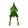

Mounted terrorbird gnome

| Config name | terrorbird_mountedspear |
| NPC id | 138 |
| Combat level | 49 |
| Hitpoints | 55 |
| Attack / Strength / Defence | 40 / 40 / 40 |
| Respawn | 60 ticks |
| Options | Attack |
| Wander range | 12 tiles from spawn |
| Max range | 14 tiles from spawn |
| Area folder | area_gnome |
| Defined in | scripts/areas/area_gnome/configs/gnome.npc |
| Bonuses | Ranged bonus 2, Stab def 16, Slash def 16, Crush def 18, Magic def 15, Range def 10 |
Mounted terrorbird gnome
These gnomes know how to get around!
Show all 6 spawns on the world map → Open in knowledge graph →
Drops
No drops recorded.
Locations
| Area | Coordinates | Level | Count | Map |
|---|---|---|---|---|
| Battlefield | 2500, 3226 | 0 | 1 | view |
| Battlefield | 2524, 3234 | 0 | 1 | view |
| Battlefield | 2530, 3217 | 0 | 1 | view |
| Battlefield | 2532, 3217 | 0 | 1 | view |
| Battlefield | 2534, 3217 | 0 | 1 | view |
| Battlefield | 2537, 3236 | 0 | 1 | view |